I have been playing with Stable Diffusion lately, as I am sure many have. I thought it would be worthwhile to publish some of my favorites along with the prompts and seeds for each image. All images have a “classifier free guidance (CFG) scale” (or simply “guidance”) value of 7.5; are 512 by 512 pixels; use the k_lms sampler; and use 50 steps. The seeds are marked after the prompt after the -S flag.
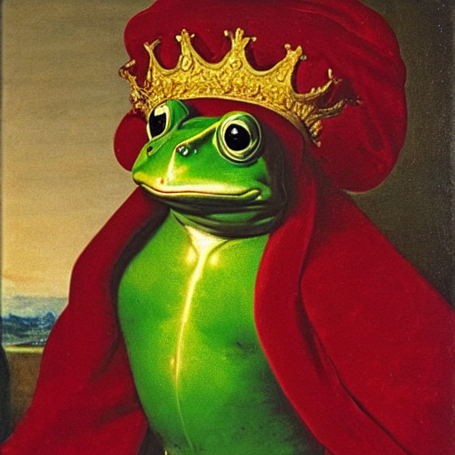
Portrait of a green frog wearing a deep red velvet robe and golden crown, oil painting by Hyacinthe Rigaud, baroque, rich -S3173279521
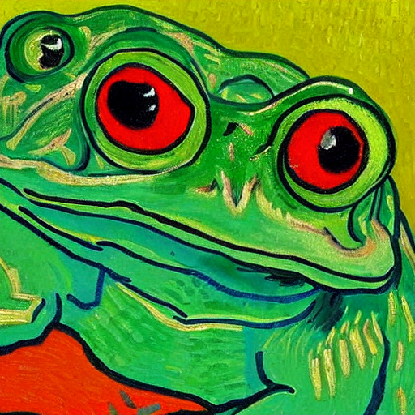
Impressionist painting of green frog with red eyes by Van Gogh, impressionist -S4232807157
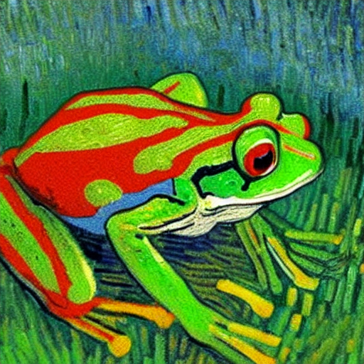
Impressionist painting of green frog with red eyes in grass meadow, by Van Gogh, impressionist -S2854560348
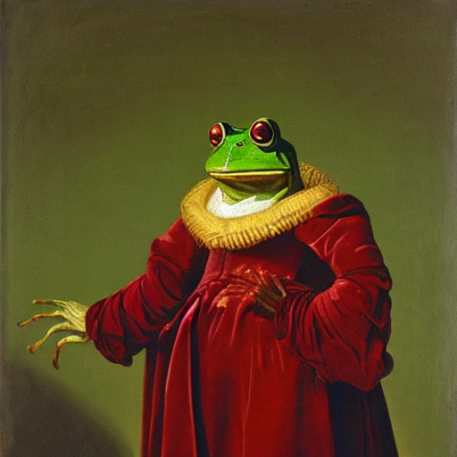
Portrait of a green frog wearing a deep red velvet robe and golden crown, oil painting by Hyacinthe Rigaud, baroque, rich -S1372305360
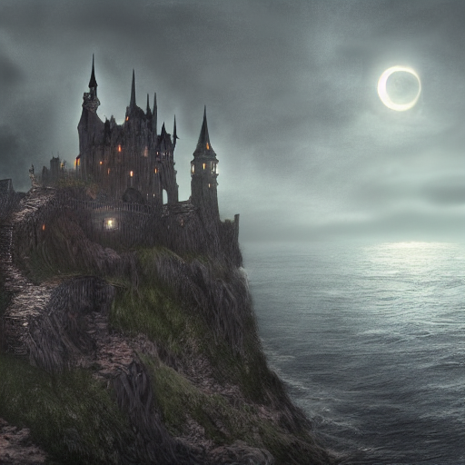
a matte painting of an old stone gothic castle on a cliff over the sea at night, creepy, dark, gothic, stormy, masterpiece, artstation -S4153617768
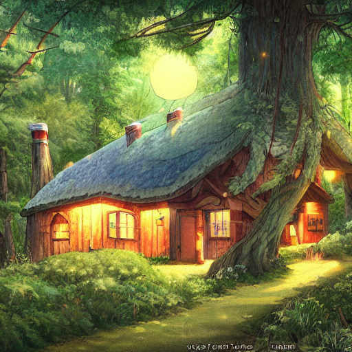
Cozy house in the woods, anime, oil painting by Josef Thoma, high resolution, cottagecore, Studio Ghibli inspired, 4k -S2819016467
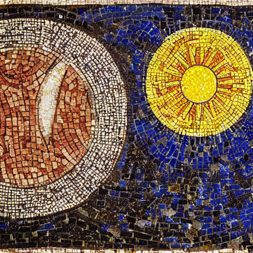
The sun and the moon, roman mosaic -S3992813662
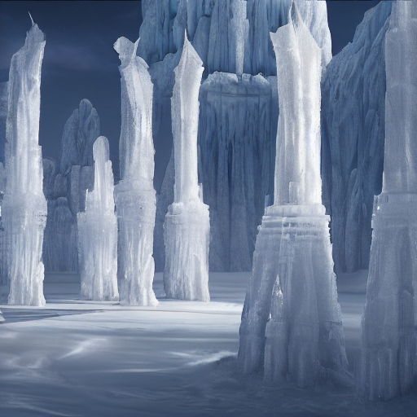
A white ice palace with tall pillars and an ice throne in the center, by Josef Thoma, matte painting, detailed, 4k -S3712115669
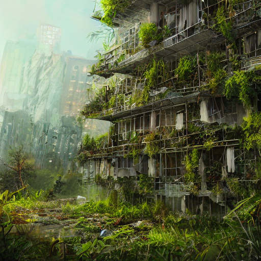
overgrown foliage overtaking tall destroyed buildings, biopunk, scenery, professional, award-winning, trending on artstation, detailed, realistic, beautiful, emotional, shiny, golden, picture, antview, close up -S1483373964
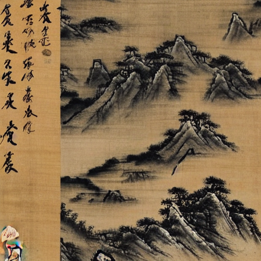
A beautiful mountain landscape on an ancient scroll, ink brush painting, traditional Chinese, by Ma Yuan -S2983311206
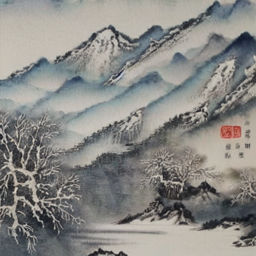
snow covered mountains in chinese watercolor painting, landscape, masterpiece, ancient -S3991627781
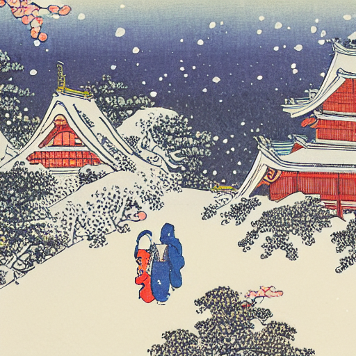
two people in a snowy mountain village, snow falling from the sky, japanese watercolor painting, color and ink on scroll, by hokusai, landscape painting, masterpiece, ancient -S2964261701
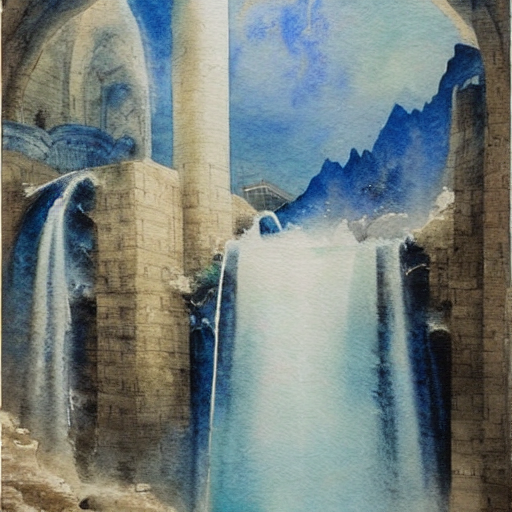
large persian mosque in the middle of waterfall in chinese watercolor painting, oil painting, masterpiece, aesthetic -S392247870